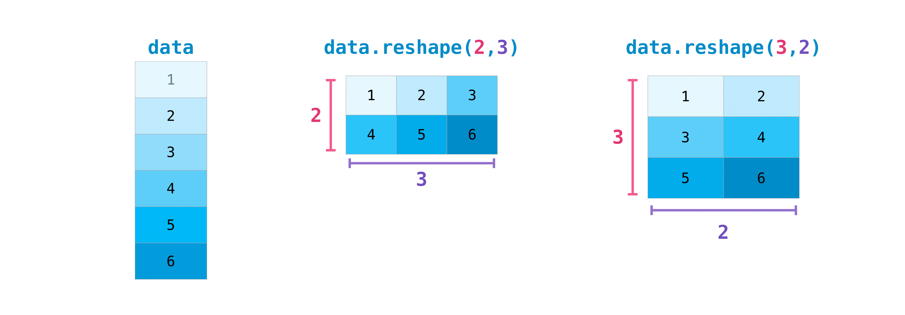

Beginner (Official)
Contents
1. Beginner (Official)¶
NumPy 是 Numerical Python 的縮寫，是一個 open source Python library
Numpy 被頻繁地用在 Pandas, SciPy, Matplotlib, scikit-learn, scikit-image … 等package中
Numpy 包含兩種 data structure:
multidimensional array (i.e.
ndarray)matrix
Numpy 有一堆高階數學function，可以對 ndarray 和 matrix 做計算
import numpy as np
1.1. 定義 ndarray¶
在 numpy 世界中，不是只有 tabular 這種資料型態。
事實上，他把資料的儲存和計算，generalize 到 ndarray (n維陣列/n階張量) 之中.
舉例來說：
我收到 100 個人的身高，我可以儲存成一個 1d-array: (e.g. [172, 189, 164, …, 158]) -> \(R^{100人}\)
我收到 100 個人的身高和體重，我可以儲存成 2d-array: (e.g. [[172,…,158],[65,…,54]]) -> \(R^{2變數 \times 100人}\)
我收到 1 張 8x8像素的灰階影像的數據，是個矩陣型資料，可以存到 2d-array 中 -> \(R^{8像素 \times 8像素}\)
1張彩色影像數據，會是RGB 3 個通道，每個通道都是 8x8 像素的圖片，可以存到 3d-array 中 \(R^{3通道 \times 8像素 \times 8像素}\)
10 張彩色影像數據，可以存到 4d-array 中 -> \(R^{10張 \times 3通道 \times 8像素 \times 8像素}\)
5批資料，每批都有 10 張彩色影像，可以存到 5d-array中 \(R^{5 \times 10 \times 3 \times 8 \times 8}\)
3個年份，每個年份都有5批資料，每批都有 10 張彩色影像，可以存到 6d-array中 \(R^{3年份 \times 5批 \times 3通道 \times 8像素 \times 8像素}\)
所以，這邊先講結論，等等會舉例和示範：
ndarray，就是 n “層” list 的結構，要用階層的角度去思考.
ndarray 的 d，是 dim 的縮寫，他的 dim 是指 R 的上面有幾個數字相乘(i.e. \(R^3\), \(R^2\) 的 R 上面都只有一個數字，所以他是 1d; \(R^{2 \times 3}\), \(R^{100 \times 5}\) 的 R 上面都是 2 個數字相乘，所以是 2d; 後面以此類推，\(R^{3 \times 5 \times 3 \times 8 \times 8}\) 的 R 上面有 6 個數字相乘，所以是 6d
所以，ndarray的 dim，和線性代數的 dim 不同，因為他的dim是要描述資料儲存需要幾層，但線性代數的dim是在描述要span出一個空間需要幾個基底向量 (所以線代的 \(R^3\) 是指 span 出這個空間要3個向量，dim=3; dim(\(R^4\))=4; dim(\(R^{2x3}\))=6，不要搞混了)
最後，繼續混淆你的是，\(R^{3x4}\) 他叫 2d-array，表示 dim = 2 (實際上也是用
.ndim這個 attribute去看維度)，但他又喜歡稱呼他為 2-axes(兩個軸)，第一個 axis 的 size = 3, 第二個 axis 的 size = 4
開始看實例吧：
1.1.1. 1d-array¶
就是只有
1層的結構
# 1d-array
a = np.array([1,2,3])
a
array([1, 2, 3])
因為所有的 element 都是數字，所以我可以做數學計算：
a.mean()
2.0
1.1.2. 2d-array¶
對於1張灰階影像資料，例如是這樣的一張矩陣型資料: \(\left[\begin{array}{cc} 0 & 1\\1 & 0 \\1 & 1\end{array}\right]\)，可以用數學寫成： \(\boldsymbol{X} \in R^{3 \times 2}\)
在 python 中，會用這樣的 array 來儲存他：
a = [
[0, 1],
[1, 0],
[1, 1]
]
a = np.array(a)
a
array([[0, 1],
[1, 0],
[1, 1]])
我們總是會很想用矩陣的角度去看他，但拜託你忍一忍，不要這樣做。因為之後要一路推廣下去。
所以，我們現在改成用層次的方式來理解他：\(R^{3 \times 2}\) 就讀成: 總共有3列，每一列都有2筆數據。
那他的階層就會長成：
第一列: [0, 1]
第一列的第一個 element: 0
第一列的第二個 element: 1
第二列: [1, 0]
第二列的第一個 element: 1
第二列的第二個 element: 0
第三列: [1, 1]
第三列的第一個 element: 1
第三列的第二個 element: 1
也就是第一層是 \(R^{3 \times 2}\) 的 3，第二層是 \(R^{3 \times 2}\) 的 2
所以，我們要練習，這樣寫 list：
# 第一步，先寫出第一層，有3列：
# a = [[], [], []]
# 第二步，再把第二層的內容補進去，各2個element：
a = [[0, 1], [1, 0], [1, 1]]
# 第三步，轉成 np.array
a = np.array(a)
接著，來定義一些名詞： \(R^{3 \times 2}\)，R的上面有
2個數字相乘，我們稱它為2階張量，儲存的資料類型是2d array。也就是說，這個張量的維度是2。然後 R 上面的長相是 \(3 \times 2\)，所以我們說他的 shape 是(3,2)我們來看一下這個 numpy array 的 attribute，就可以驗證上面講的內容：
a.ndim
2
ndim 是 2，就表示 ndarray 是 2d array(n=2, 有兩層，R上面有2個數字相乘)
a.shape
(3, 2)
shape 是 (3,2)，表示他是 \(R^{3 \times 2}\) 的張量
1.1.3. 3d-array¶
# 2d-array
b = np.array([[1,2],[3,4]])
b
array([[1, 2],
[3, 4]])
# 2d-array (用 tuple，自動幫你轉回list)
b = np.array([(1,2),(3,4)])
b
array([[1, 2],
[3, 4]])
對於1張彩色影像資料，他會有3張矩陣型資料，例如長成這樣：
那我可以寫成這樣：\(\boldsymbol{X} \in R^{3 \times 3 \times 2}\)
由 \(R^{3 \times 3 \times 2}\) 已可知道，他是 3d array(所以要給他3層)。shape是
3*3*2，所以第一層有3個 element，第二層有3個element，第三層有2個element。那我再造 list 時，第一步就是先寫第一層：
a = [
[],
[],
[]
]
然後第二層：
a = [
[
[],
[],
[]
],
[
[],
[],
[]
],
[
[],
[],
[]
]
]
最後，做出第三層：
a = [
[
[0, 1],
[1, 0],
[1, 1]
],
[
[0, 0],
[1, 1],
[1, 0]
],
[
[1, 1],
[0, 0],
[0, 1]
]
]
a = np.array(a)
a
array([[[0, 1],
[1, 0],
[1, 1]],
[[0, 0],
[1, 1],
[1, 0]],
[[1, 1],
[0, 0],
[0, 1]]])
驗證一下，這個 \(R^{3 \times 3 \times 2}\) 是 3d array(因為R上面有3個數字相乘，或說，建立list的時候要寫到第3層)。shape是
3*3*2
print(f"the dim of a is {a.ndim}")
print(f"the shape of a is {a.shape}")
the dim of a is 3
the shape of a is (3, 3, 2)
1.1.4. 4d-array¶
剛剛介紹完，1張彩色影像資料要如何儲存。那如果 2 張彩色影像數據，要如何存到 list 中？
很簡單嘛，現在變成是一個 \(R^{2張 \times 3通道 \times 3列 \times 2行}\) 的資料，所以我要做一個 4D array(因為 R 上面有4個數字相乘，list要做到4層)，然後他的 shape 會是
(2,3,3,2)開始造 list ，第一步就是先寫第一層(2張圖片)：
a = [
[],
[]
]
然後第二層，每張圖片，都有RGB三個通道：
a = [
[
[],
[],
[]
],
[
[],
[],
[]
]
]
然後，第三層，每個 RGB 中，都有三列：
a = [
[
[
[],
[],
[]
],
[
[],
[],
[]
],
[
[],
[],
[]
]
],
[
[
[],
[],
[]
],
[
[],
[],
[]
],
[
[],
[],
[]
]
]
]
最後，每一列裡面，都有兩個 element:
a = [
[
[
[0, 1],
[1, 0],
[1, 1]
],
[
[0, 0],
[1, 1],
[1, 0]
],
[
[1, 1],
[0, 0],
[0, 1]
]
],
[
[
[0, 0],
[1, 0],
[0, 1]
],
[
[1, 1],
[1, 1],
[1, 1]
],
[
[0, 0],
[0, 1],
[1, 0]
]
]
]
a = np.array(a)
a
array([[[[0, 1],
[1, 0],
[1, 1]],
[[0, 0],
[1, 1],
[1, 0]],
[[1, 1],
[0, 0],
[0, 1]]],
[[[0, 0],
[1, 0],
[0, 1]],
[[1, 1],
[1, 1],
[1, 1]],
[[0, 0],
[0, 1],
[1, 0]]]])
驗證一下，這個 \(R^{2張 \times 3通道 \times 3列 \times 2行}\)是 4d array(因為R上面有4個數字相乘，或說，建立list的時候要寫到第4層)。shape是
2*3*3*2
print(f"the dim of a is {a.ndim}")
print(f"the shape of a is {a.shape}")
print(a.size)
len(a)
the dim of a is 4
the shape of a is (2, 3, 3, 2)
36
2
1.2. dtype¶
numpy的資料類型包括：
int (帶符號的整數)
int8
int16
int32
int64 (預設)
unit (不帶符號的整數)
unit8
unit16
unit32
unit64
float (浮點數)
float16
float32
float64 (預設)
float128
bool
a = np.array([0, 1, 2])
print(a)
print(a.dtype)
[0 1 2]
int64
b = np.array([0, 1, 2], dtype = "float64")
print(b)
print(b.dtype)
[0. 1. 2.]
float64
# 轉換 type
c = np.array(b, dtype = "int32")
print(c)
print(c.dtype)
[0 1 2]
int32
1.3. subsetting, slicing, indexing¶
subsetting 就是取特定位置，例如 a[[0,2]].
slicing 是取起點到終點的位置，例如 a[0:3]
這邊就一起講吧
1.3.1. 1-d¶

a = np.arange(10) # 0~9 共 10 個元素的 array
a
array([0, 1, 2, 3, 4, 5, 6, 7, 8, 9])
# subsetting
print(a[0])
print(a[[0, 2, 4]])
0
[0 2 4]
# slicing
a[1:5] # start = 1, stop = 5(所以不包含5) => 取 index = 1 ~ 4
array([1, 2, 3, 4])
a[2:8:2] # start = 2, stop = 8(所以不包含8), step = 2, 所以是取 index = 2, 4, 6
array([2, 4, 6])
print(a[0:2])
print(a[:2]) # 意思一樣
[0 1]
[0 1]
a[-1] # 最後一個
9
a[-3] # 從後數來第三個
7
print(a[-3:]) # 從後數來第三個，到最後
print(a[-3:-1]) # start = -3, stop = -1 (所以不包含-1)
[7 8 9]
[7 8]
print(a[4:]) # 取 index = 4 到最後
print(a[4:-1]) # start = 4, stop = 最後(所以不包含最後)
[4 5 6 7 8 9]
[4 5 6 7 8]
a[::-1] # a[::] 表示從最後到最前的全部, step = -1, 所以是整個倒過來的意思
array([9, 8, 7, 6, 5, 4, 3, 2, 1, 0])
a[::2] # 每間隔兩個取一次
array([0, 2, 4, 6, 8])
# booling indexing
bool_ind = a > 5
bool_ind
array([False, False, False, False, False, False, True, True, True,
True])
a[bool_ind]
array([6, 7, 8, 9])
1.3.2. 2-d¶
b = np.arange(20).reshape(4,5)
b
array([[ 0, 1, 2, 3, 4],
[ 5, 6, 7, 8, 9],
[10, 11, 12, 13, 14],
[15, 16, 17, 18, 19]])
b[1:3, 2:4] # 第一個軸，取 start = 1, stop = 3(不包含3)，所以是取 index = 1, 2 的列，也就是第 2, 3 兩列
# 第二個軸，取 start = 2, stop = 4(不包含4)，所以是取 index = 2, 3 的行，也就是第 3, 4 兩行
array([[ 7, 8],
[12, 13]])
b[:2, 1:] # index = 0~1 的列 (i.e. 第1, 2 列); index = 1:最後的行 (i.e. 第 2, 3, 4, 5 行)
array([[1, 2, 3, 4],
[6, 7, 8, 9]])
# booling indexing
b < 6
array([[ True, True, True, True, True],
[ True, False, False, False, False],
[False, False, False, False, False],
[False, False, False, False, False]])
b[b<5]
array([0, 1, 2, 3, 4])
1.4. Broadcasting¶
broadcasting 是 numpy 在背後幫我們做的，那這邊要來了解一下，背後幫我們做了哪些事
1.4.1. 增軸¶
a = np.array([[1,2]])
b = np.array([3,4])
print(a.shape)
print(b.shape)
(1, 2)
(2,)
可以看到， a 有兩個軸 (因為 shape 有兩個 element); b 有 1 個軸.
但，這兩個 array 還是可以相加，這是因為，他會幫 b 多增加一個軸，變成 [[3,4]], shape 為 (1,2)，然後再相加
a + b
array([[4, 6]])
1.4.2. 增維¶
另外一種，是增加維度。也就是原本大家的軸是一樣的，但維不一樣，例如以下：
data = np.array([[1, 2], [3, 4], [5, 6]])
ones_row = np.array([[1, 1]])
print(data.shape) # 2軸, 維度分別為 3 與 2
print(ones_row.shape) # 2 軸, 維度是 1 與 2
res = data + ones_row
print(res)
print(res.shape)
(3, 2)
(1, 2)
[[2 3]
[4 5]
[6 7]]
(3, 2)

增軸 和 增維 可以同時發生，例如底下這個 case
data = np.array([[1, 2], [3, 4], [5, 6]])
ones_row = np.array([1, 1])
print(data.shape)
print(ones_row.shape)
print(data+ones_row)
(3, 2)
(2,)
[[2 3]
[4 5]
[6 7]]
numpy 把 ones_row，先增家了第一個軸，在幫他把維度調成3，才能與 data 相加
同樣的 case 如下：
a = np.array([1,2])
b = np.array(1.6)
print(a.shape) # 1軸, 維度2
print(b.shape) # 0 軸
print(a*b)
print((a*b).shape)
(2,)
()
[1.6 3.2]
(2,)

1.5. 建立特殊 array¶
我們可以造出各種特殊的 array
造出 constant array (e.g.
np.zeros(),np.ones(),np.full()做出單位矩陣 (e.g.
np.eye())做出等距的向量 (e.g.
np.arange(),np.linspace())做出隨機向量 (e.g.
np.random.*())
1.5.1. np.arange()¶
給公差，建立等差數列
np.arange(10) # 預設公差 = 1
array([0, 1, 2, 3, 4, 5, 6, 7, 8, 9])
np.arange(10,25,3) # start = 10, stop = 25(所以不包含25), 公差是 3
array([10, 13, 16, 19, 22])
1.5.2. np.linspace()¶
給個數，幫你生均勻數列
np.linspace(10,25,5) # start = 10, end = 25(所以包含25), 在 10~25 中，幫我生出 5 個數字
array([10. , 13.75, 17.5 , 21.25, 25. ])
1.5.3. np.zeros()¶
np.zeros(4)
array([0., 0., 0., 0.])
np.zeros((3,2))
array([[0., 0.],
[0., 0.],
[0., 0.]])
1.5.4. np.zeros_like()¶
可以幫你轉成某個 array 的形狀，然後裡面全補 0
a = np.arange(9).reshape(3,3)
a
array([[0, 1, 2],
[3, 4, 5],
[6, 7, 8]])
np.zeros_like(a)
array([[0, 0, 0],
[0, 0, 0],
[0, 0, 0]])
1.5.5. np.ones()¶
np.ones(4)
array([1., 1., 1., 1.])
np.ones((3,2))
array([[1., 1.],
[1., 1.],
[1., 1.]])
1.5.6. np.ones_like()¶
a = np.arange(9).reshape(3,3)
a
array([[0, 1, 2],
[3, 4, 5],
[6, 7, 8]])
np.ones_like(a)
array([[1, 1, 1],
[1, 1, 1],
[1, 1, 1]])
1.5.7. np.empty()¶
如果想，隨便產出一個 array的話，就用他
雖然寫 empty，但其時是隨意給值的意思，看例子就懂了：
np.empty((3,3))
array([[-2.00000000e+000, 2.68679152e+154, 2.47032823e-323],
[ 0.00000000e+000, -2.08433509e-289, 5.26145431e-037],
[ 1.77290936e+160, 7.17689852e-091, 1.73257474e+185]])
這個 funtion 的效率比 np.ones() 和 np.zeros() 好很多，所以如果我們想先做出某個 shape 的 array，之後再把正確的值填入的話，用 np.empty() 就對了
1.5.8. np.full()¶
np.full(5, 4) # 做一個 shape = 5 的 array，element 都是 4
array([4, 4, 4, 4, 4])
np.full((3,2), 4) # 做一個 shape = (3,2) 的 array，element 都是 4
array([[4, 4],
[4, 4],
[4, 4]])
1.5.9. 單位矩陣： np.identity()¶
np.identity(3)
array([[1., 0., 0.],
[0., 1., 0.],
[0., 0., 1.]])
np.identity(5)
array([[1., 0., 0., 0., 0.],
[0., 1., 0., 0., 0.],
[0., 0., 1., 0., 0.],
[0., 0., 0., 1., 0.],
[0., 0., 0., 0., 1.]])
1.5.10. 單位矩陣加強版: np.eye()¶
np.eye() 除了可以做到 np.identity() 的事外：
np.eye(3)
array([[1., 0., 0.],
[0., 1., 0.],
[0., 0., 1.]])
np.eye(5)
array([[1., 0., 0., 0., 0.],
[0., 1., 0., 0., 0.],
[0., 0., 1., 0., 0.],
[0., 0., 0., 1., 0.],
[0., 0., 0., 0., 1.]])
np.eye() 還可以做出非方陣：
np.eye(3,5)
array([[1., 0., 0., 0., 0.],
[0., 1., 0., 0., 0.],
[0., 0., 1., 0., 0.]])
np.eye(5,3)
array([[1., 0., 0.],
[0., 1., 0.],
[0., 0., 1.],
[0., 0., 0.],
[0., 0., 0.]])
np.eye() 還有 k 參數，可以讓 1 從對角線，往上k單位，或往下 k 單位
np.eye(5, k = 1) # 往上 1 單位
array([[0., 1., 0., 0., 0.],
[0., 0., 1., 0., 0.],
[0., 0., 0., 1., 0.],
[0., 0., 0., 0., 1.],
[0., 0., 0., 0., 0.]])
np.eye(5, k = -2) # 往下 2 單位
array([[0., 0., 0., 0., 0.],
[0., 0., 0., 0., 0.],
[1., 0., 0., 0., 0.],
[0., 1., 0., 0., 0.],
[0., 0., 1., 0., 0.]])
1.6. np.random module¶
from numpy import random
1.6.1. distribution¶
1.6.1.1. rand(): 我想產出 U(0,1) 的亂數¶
random.rand(10) # 產出 shape = (10,) 的 U(0,1) 亂數
array([0.79417454, 0.67985571, 0.79238622, 0.54069859, 0.61529294,
0.75718441, 0.26420433, 0.7510402 , 0.10860206, 0.26272118])
random.rand(2,3) # 產出 shape = (2,3) 的 U(0,1) 亂數
array([[0.27476032, 0.80140322, 0.60979402],
[0.12381289, 0.19017506, 0.27366786]])
1.6.1.2. 我想產出 U(a,b) 的亂數¶
這就要自己動點手腳
如果 \(X \sim U(a,b)\)，那 \(\frac{X-a}{b-a} \sim U(0,1)\)
所以： \(X \sim (b-a) \times U(0,1) + a\)
(5-3)*random.rand(5) + 3 # 產生 shape = (5,) 的 U(3,5) 亂數
array([3.78324648, 4.82878708, 3.26362245, 4.16312312, 4.5265584 ])
1.6.1.3. randint(): 我想產出 U(low, high) 的整數值亂數¶
random.randint(3, 9, 3) # start = 3, stop = 9(不包含9)，產出 shape = (3,) 的 U(3,8) 整數值亂數
array([7, 8, 5])
random.randint(3, 9, (3,3)) # start = 3, stop = 9(不包含9)，產出 shape = (3,3) 的 U(3,8) 整數值亂數
array([[5, 3, 3],
[8, 4, 7],
[7, 3, 8]])
1.6.1.4. 我想產出 N(0,1) 的亂數¶
1.6.1.5. 我想產出 N(mean, sigma) 的亂數¶
1.6.2. 設 seed¶
在我們產生任何亂數時，他都會用產生亂數的時間，來當 seed，所以每次產出的結果都不會一樣 (因為時間都不同).
那我們可以在產生亂數之
前，先用random.seed()來設 seed ，就能讓結果相同
random.seed(3)
print(random.rand(5))
print(random.rand(5)) # 此時的 seed 是用執行這行時的時間當 seed，所以會和第一行結果不同
random.seed(3)
print(random.rand(5)) # seed 設的跟第一次相同，所以結果相同
[0.5507979 0.70814782 0.29090474 0.51082761 0.89294695]
[0.89629309 0.12558531 0.20724288 0.0514672 0.44080984]
[0.5507979 0.70814782 0.29090474 0.51082761 0.89294695]
1.6.3. 隨機抽樣¶
a = ["python", "Ruby", "Java", "JavaScript", "PHP"]
random.choice(a, 3) # 隨機抽出 3 個, 預設是取後放回，也就是 replace = True
array(['Ruby', 'JavaScript', 'Java'], dtype='<U10')
random.choice(a, 10, replace = True) # 因為是取後放回，所以可以取超過選單數量的個數
array(['Ruby', 'PHP', 'PHP', 'python', 'python', 'Ruby', 'Java', 'PHP',
'python', 'python'], dtype='<U10')
random.choice(a, 10, replace = True, p = [0.8, 0.05, 0.05, 0.05, 0.05]) # 依不同權重來抽樣
array(['python', 'python', 'python', 'python', 'python', 'python',
'python', 'python', 'python', 'Java'], dtype='<U10')
random.choice(a, 5, replace = False) # 取後不放回，所以最多只能取 5 個
array(['PHP', 'Ruby', 'JavaScript', 'Java', 'python'], dtype='<U10')
random.choice(9, 5, replace = False) # 第一個 argument 寫 9，等於 range(9)的意思，所以會從 0~8 做抽樣
array([2, 4, 3, 1, 8])
1.6.4. 隨機排列¶
a = np.arange(10)
a
array([0, 1, 2, 3, 4, 5, 6, 7, 8, 9])
random.shuffle(a) # 隨機重排後，存回 a (所以不用再 assign 回 a)
a
array([6, 2, 5, 3, 8, 4, 7, 1, 9, 0])
orig = np.arange(9).reshape((3,3))
orig
array([[0, 1, 2],
[3, 4, 5],
[6, 7, 8]])
random.shuffle(orig) # 會 by column 內, 自己 random
orig
array([[0, 1, 2],
[3, 4, 5],
[6, 7, 8]])
1.7. Sorting¶
np.sort: 排序
np.argsort: 回傳 index，照他的 index 取值就可完成排序
1.7.1. 1-d array¶
a = np.random.randint(0, 100, size = 20)
a
array([ 2, 19, 14, 38, 36, 2, 95, 0, 62, 15, 15, 23, 54, 38, 85, 85, 73,
70, 33, 7])
np.sort(a)
array([ 0, 2, 2, 7, 14, 15, 15, 19, 23, 33, 36, 38, 38, 54, 62, 70, 73,
85, 85, 95])
ind = np.argsort(a)
ind
array([ 7, 0, 5, 19, 2, 10, 9, 1, 11, 18, 4, 13, 3, 12, 8, 17, 16,
14, 15, 6])
a[ind]
array([ 0, 2, 2, 7, 14, 15, 15, 19, 23, 33, 36, 38, 38, 54, 62, 70, 73,
85, 85, 95])
1.7.2. 2-d array¶
a = np.random.randint(0, 100, size = 20).reshape(4,5)
a
array([[43, 82, 87, 71, 51],
[49, 9, 67, 89, 82],
[ 6, 12, 70, 89, 30],
[32, 67, 3, 85, 74]])
1.7.2.1. 各 column 自己排序¶
如果想在每個 column 裡面做排序，那用
axis = 0
np.sort(a, axis = 0)
array([[ 6, 9, 3, 71, 30],
[32, 12, 67, 85, 51],
[43, 67, 70, 89, 74],
[49, 82, 87, 89, 82]])
如果用 argsort：
ind = np.argsort(a, axis = 0)
ind
array([[2, 1, 3, 0, 2],
[3, 2, 1, 3, 0],
[0, 3, 2, 1, 3],
[1, 0, 0, 2, 1]])
要對每一行來看，例如第一行是 2,3,0,1 ，表示第一行如果要排序的話，要先取 index = 2, 接著 3, 0, 1。其他每一行也都是這樣看
1.7.2.2. 各 row 自己排序¶
如果想在每個 row 裡面做排序，那用
axis = 1
np.sort(a, axis = 1)
array([[43, 51, 71, 82, 87],
[ 9, 49, 67, 82, 89],
[ 6, 12, 30, 70, 89],
[ 3, 32, 67, 74, 85]])
如果用 argsort
np.argsort(a, axis = 1)
array([[0, 4, 3, 1, 2],
[1, 0, 2, 4, 3],
[0, 1, 4, 2, 3],
[2, 0, 1, 4, 3]])
現在變成要每一列來看。
例如第一列，是 0, 4, 3, 1, 2，表示第一列要排序時，要先取 index = 0, 再來 4, 3, 1, 2
1.7.3. 3-d array¶
c = np.random.randint(0, 100, size = (2, 4, 5))
c
array([[[45, 15, 43, 77, 2],
[ 9, 34, 62, 77, 12],
[36, 41, 54, 68, 74],
[19, 54, 75, 46, 66]],
[[85, 1, 7, 19, 56],
[79, 76, 86, 65, 84],
[56, 31, 24, 82, 82],
[58, 85, 8, 38, 82]]])
如果對
axis = 0做排序，那就是對最外層做排序，所以是對這兩個 2d-array 的對應 element 做比較，然後排大小：
np.sort(c, axis = 0)
array([[[45, 1, 7, 19, 2],
[ 9, 34, 62, 65, 12],
[36, 31, 24, 68, 74],
[19, 54, 8, 38, 66]],
[[85, 15, 43, 77, 56],
[79, 76, 86, 77, 84],
[56, 41, 54, 82, 82],
[58, 85, 75, 46, 82]]])
可以看到，現在上下兩個 2d array，每一個 element 都是上面的小，下面的大
用 argsort 也可以看到這個現象：
np.argsort(c, axis = 0)
array([[[0, 1, 1, 1, 0],
[0, 0, 0, 1, 0],
[0, 1, 1, 0, 0],
[0, 0, 1, 1, 0]],
[[1, 0, 0, 0, 1],
[1, 1, 1, 0, 1],
[1, 0, 0, 1, 1],
[1, 1, 0, 0, 1]]])
看上下兩個 2d array，
第一個 element 上下對應到的值是 0, 1，表示要先選 index = 0(上面的)，再選 index = 1(下面的)，才完成排序
第二個 element，上下對應到的值是 1, 0，表示要先選 index = 1(下面的)，再選 index = 0(上面的)，才完成排序
1.7.4. .sort() method¶
和剛剛的用法完全一樣，差別在，他不會吐值，而是 in-place 取代掉原本的 object
a = np.random.randint(0, 100, size = 20)
a
array([ 2, 66, 43, 32, 39, 88, 57, 9, 85, 38, 2, 64, 47, 61, 70, 5, 91,
89, 75, 10])
a.sort() # 不會吐值出來，排序完，in-place 取代掉原物件 a
a
array([ 2, 2, 5, 9, 10, 32, 38, 39, 43, 47, 57, 61, 64, 66, 70, 75, 85,
88, 89, 91])
a = np.random.randint(0, 100, size = 20).reshape(2,10)
a
array([[17, 9, 56, 33, 87, 67, 92, 76, 67, 24],
[ 4, 18, 11, 49, 65, 26, 45, 13, 57, 60]])
a.sort()
a
array([[ 9, 17, 24, 33, 56, 67, 67, 76, 87, 92],
[ 4, 11, 13, 18, 26, 45, 49, 57, 60, 65]])
a.sort(axis = 0)
a
array([[ 4, 11, 13, 18, 26, 45, 49, 57, 60, 65],
[ 9, 17, 24, 33, 56, 67, 67, 76, 87, 92]])
1.8. Array 改形狀¶
1.8.1. 調 shape: reshape (mutable)/ resize (immutable)¶

1.8.1.1. 指定新 shape 的 np function 一樣¶
# 兩種的做法都一樣，元素都是 by row 填入
a = np.arange(6)
print(np.reshape(a, (2,3)))
print(np.resize(a, (2,3)))
[[0 1 2]
[3 4 5]]
[[0 1 2]
[3 4 5]]
1.8.1.2. reshape 可以是 ndarray 物件的 method，但 resize 不是¶
a = np.arange(6)
print(a.reshape(2, 3)) # method 的寫法，ok
print(a.resize(2, 3)) # 無法
[[0 1 2]
[3 4 5]]
None
如果我寫 -1 ，那 np 會幫我算出適合的數量
a.reshape(2, -1) # 行數寫 -1 ，他會自動幫你算出，3 比較適合
array([[0, 0, 2],
[3, 4, 5]])
a.reshape(-1, 2) # 列數寫 -1，他會自動幫你算出 -3 比較適合
array([[0, 0],
[2, 3],
[4, 5]])
1.8.1.3. reshape 可以用 -1, resize 不行¶
在轉shape的時候，如果填 -1 ，他會自動幫你找到對的 colum, row 數量
a.reshape(2, -1) # 行數寫 -1 ，他會自動幫你算出，3 比較適合
array([[0, 1, 2],
[3, 4, 5]])
a.reshape(-1, 2) # 列數寫 -1 ，他會自動幫你算出，3 比較適合
array([[0, 1],
[2, 3],
[4, 5]])
如果是 resize, 他會直接報 error
np.resize(a, (2, -1))
---------------------------------------------------------------------------
ValueError Traceback (most recent call last)
Input In [115], in <module>
----> 1 np.resize(a, (2, -1))
File <__array_function__ internals>:5, in resize(*args, **kwargs)
File /Volumes/GoogleDrive/我的雲端硬碟/0. codepool_python/python_ds/python_ds_env/lib/python3.8/site-packages/numpy/core/fromnumeric.py:1425, in resize(a, new_shape)
1423 new_size *= dim_length
1424 if dim_length < 0:
-> 1425 raise ValueError('all elements of `new_shape` must be non-negative')
1427 if a.size == 0 or new_size == 0:
1428 # First case must zero fill. The second would have repeats == 0.
1429 return np.zeros_like(a, shape=new_shape)
ValueError: all elements of `new_shape` must be non-negative
a.resize(2, -1)
---------------------------------------------------------------------------
ValueError Traceback (most recent call last)
Input In [116], in <module>
----> 1 a.resize(2, -1)
ValueError: negative dimensions not allowed
1.8.1.4. resize 可轉成不適配的維度, reshape 不行¶
a = np.arange(6)
b = np.resize(a, (2, 4))
print(b)
[[0 1 2 3]
[4 5 0 1]]
可以看到，他會幫你循環補值。但如果用 reshape，他會直接報 error
1.8.1.5. reshape 可以 by column 來排， resize 不行¶
a = np.arange(9)
print(a.reshape(3, 3, order = "C")) # order = "C" 的 C 是 C語言的縮寫，他是 by column
print(a.reshape(3, 3, order = "F")) # order = "F" 的 F 是 Fortran 語言的縮寫，他是 by row
[[0 1 2]
[3 4 5]
[6 7 8]]
[[0 3 6]
[1 4 7]
[2 5 8]]
1.8.1.6. reshape 是 mutable, resize 是 immutable¶
a = np.arange(6)
b = np.reshape(a, (2, 3))
b[0,0] = 99 # 改 b
print(b)
print(a) # a 跟著變
[[99 1 2]
[ 3 4 5]]
[99 1 2 3 4 5]
a = np.arange(6)
b = np.resize(a, (2, 3))
b[0,0] = 99 # 改 b
print(b)
print(a) # a 不會跟著變
[[99 1 2]
[ 3 4 5]]
[0 1 2 3 4 5]
如果希望 reshape 也是 immutable，那要善用 copy
a = np.arange(6)
b = np.reshape(a, (2, 3)).copy()
b[0,0] = 99 # 改 b
print(b)
print(a) # a 不會跟著變
[[99 1 2]
[ 3 4 5]]
[0 1 2 3 4 5]
1.8.2. 拉直： flatten (immutable) / ravel (mutable)¶
1.8.2.1. 語法相同，但 flatten 是 immutable, ravle 是 mutable¶
a = np.arange(9).reshape(3,3)
a
array([[0, 1, 2],
[3, 4, 5],
[6, 7, 8]])
b = a.flatten()
print(b)
print(a)
[0 1 2 3 4 5 6 7 8]
[[0 1 2]
[3 4 5]
[6 7 8]]
b[0] = 99
print(b)
print(a)
[99 1 2 3 4 5 6 7 8]
[[0 1 2]
[3 4 5]
[6 7 8]]
可以看到，flatten 完，要 assign 他給新變數。而且，後續修改b，也不會影響到 a
但如果是 ravel，那改b，會影想到 a
a = np.arange(9).reshape(3,3)
b = np.ravel(a)
print(b)
print(a)
[0 1 2 3 4 5 6 7 8]
[[0 1 2]
[3 4 5]
[6 7 8]]
b[0] = 99
print(b)
print(a)
[99 1 2 3 4 5 6 7 8]
[[99 1 2]
[ 3 4 5]
[ 6 7 8]]
最後補充一下，你要用之前學過的 reshape 也可以，只是用 flatten() 比較簡便而已:
a = np.arange(9).reshape(3,3)
a
array([[0, 1, 2],
[3, 4, 5],
[6, 7, 8]])
a.reshape(-1) # reshape成一軸而已，維度 np 幫我找就好
array([0, 1, 2, 3, 4, 5, 6, 7, 8])
np.reshape(a, -1)
array([0, 1, 2, 3, 4, 5, 6, 7, 8])
1.8.3. 增加軸數¶
1.9. 合併 arrays¶
1.9.1. np.append()¶
這邊要注意，array 沒有
.append()這個 method，只有np.append()這個 function
1.9.1.1. 1d array¶
a = np.arange(4)
b = np.arange(4, 7)
print(a)
print(b)
print(np.append(a, b))
[0 1 2 3]
[4 5 6]
[0 1 2 3 4 5 6]
1.9.1.2. 2d array¶
b = np.arange(12).reshape((3,4))
b
array([[ 0, 1, 2, 3],
[ 4, 5, 6, 7],
[ 8, 9, 10, 11]])
如果想做到像 R 那樣的 rbind，那要記得，加進去的 array 軸數要一樣
例如，現在的 b 是 2軸 (因為 shape 是 (3,4)，有兩個 element)，所以，我也要加兩軸的資料進去
# new = [12, 13, 14, 15] # 這是錯的，因為軸數 = 1，不是原本的軸數 = 2
new = [[12, 13, 14, 15]] # 這是對的，因為軸數 = 2，和要 combind 的軸數一樣。也可簡單想成，這才是 row vector 的 shape
np.append(b, new, axis = 0) # 一定要加 axis = 0, 因為你要沿著 axis = 0 的方向加資料。沒寫的話，他默認 axis = None，會展成一軸
array([[ 0, 1, 2, 3],
[ 4, 5, 6, 7],
[ 8, 9, 10, 11],
[12, 13, 14, 15]])
如果想做 R 的 cbind，那方法一樣：
new = [[12], [13], [14]]
np.append(b, new, axis = 1)
array([[ 0, 1, 2, 3, 12],
[ 4, 5, 6, 7, 13],
[ 8, 9, 10, 11, 14]])
那當然也可兩個 2d-array 做 append
first = np.arange(12).reshape((3,4))
second = np.arange(12, 24).reshape((3,4))
# cbind
np.append(first, second, axis = 1)
array([[ 0, 1, 2, 3, 12, 13, 14, 15],
[ 4, 5, 6, 7, 16, 17, 18, 19],
[ 8, 9, 10, 11, 20, 21, 22, 23]])
# rbind
np.append(first, second, axis = 0)
array([[ 0, 1, 2, 3],
[ 4, 5, 6, 7],
[ 8, 9, 10, 11],
[12, 13, 14, 15],
[16, 17, 18, 19],
[20, 21, 22, 23]])
這邊要講，如何把多個 arrays 組合起來
1.9.1.3. np.concaterate()¶
a = np.array([1, 2, 3, 4])
b = np.array([5, 6, 7, 8])
# a + b # wrong
# np.array([a, b]) # wrong
np.concatenate((a, b))
array([1, 2, 3, 4, 5, 6, 7, 8])
x = np.array([[1, 2], [3, 4]])
y = np.array([[5, 6]])
np.concatenate((x, y), axis=0) # 沿第0軸，最外層，concate
array([[1, 2],
[3, 4],
[5, 6]])
1.9.1.4. np.vstack()¶
a1 = np.array([[1, 1],
[2, 2]])
a2 = np.array([[3, 3],
[4, 4]])
np.vstack((a1, a2))
array([[1, 1],
[2, 2],
[3, 3],
[4, 4]])
1.9.1.5. np.hstack()¶
a1 = np.array([[1, 1],
[2, 2]])
a2 = np.array([[3, 3],
[4, 4]])
np.hstack((a1, a2))
array([[1, 1, 3, 3],
[2, 2, 4, 4]])
1.10. Array 馬殺雞¶
1.10.1. Splitting¶
這邊要講，如何把一個 array，拆成多個：
x = np.arange(1, 25).reshape(2, 12)
x
array([[ 1, 2, 3, 4, 5, 6, 7, 8, 9, 10, 11, 12],
[13, 14, 15, 16, 17, 18, 19, 20, 21, 22, 23, 24]])
1.10.1.1. np.hsplit()¶
np.hsplit(x, 3) # 水平均分成 3 份
[array([[ 1, 2, 3, 4],
[13, 14, 15, 16]]),
array([[ 5, 6, 7, 8],
[17, 18, 19, 20]]),
array([[ 9, 10, 11, 12],
[21, 22, 23, 24]])]
np.hsplit(x, (3, 4)) # 我想在 column 3 切一刀， column 4 切一刀
[array([[ 1, 2, 3],
[13, 14, 15]]),
array([[ 4],
[16]]),
array([[ 5, 6, 7, 8, 9, 10, 11, 12],
[17, 18, 19, 20, 21, 22, 23, 24]])]
1.10.1.2. np.vsplit()¶
np.vsplit(x, 2) # 垂直均分兩份
[array([[ 1, 2, 3, 4, 5, 6, 7, 8, 9, 10, 11, 12]]),
array([[13, 14, 15, 16, 17, 18, 19, 20, 21, 22, 23, 24]])]
1.10.2. flip (reverse)¶
1.10.2.1. 1d array¶
arr = np.array([1, 2, 3, 4, 5, 6, 7, 8])
reversed_arr = np.flip(arr)
reversed_arr
array([8, 7, 6, 5, 4, 3, 2, 1])
1.10.2.2. 2d array¶
arr_2d = np.array([[1, 2, 3, 4],
[5, 6, 7, 8],
[9, 10, 11, 12]])
arr_2d
array([[ 1, 2, 3, 4],
[ 5, 6, 7, 8],
[ 9, 10, 11, 12]])
reversed_arr = np.flip(arr_2d)
print(reversed_arr)
[[12 11 10 9]
[ 8 7 6 5]
[ 4 3 2 1]]
reversed_arr_rows = np.flip(arr_2d, axis=0) # 只對第0軸reverse，所以原本是 [A, B, C], 變 [C, B, A]，其中 A = [1,2,3,4]
print(reversed_arr_rows)
[[ 9 10 11 12]
[ 5 6 7 8]
[ 1 2 3 4]]
reversed_arr_cols = np.flip(arr_2d, axis=1)
print(reversed_arr_cols)
[[ 4 3 2 1]
[ 8 7 6 5]
[12 11 10 9]]
1.10.3. newaxis 與 np.expand_dims()¶
這邊要介紹，如何把 1d array，轉成 row vecctor / column vector
a = np.array([1, 2, 3, 4, 5, 6])
a.shape
(6,)
a_row_vector = a[np.newaxis, :]
print(a_row_vector) # 變成 row vector
print(a_row_vector.shape)
[[1 2 3 4 5 6]]
(1, 6)
np.newaxis 就是宣告多一個軸，而且是放在第一個位子
如果放在第二個位子，變成 column vector
a_col_vector = a[:, np.newaxis]
print(a_col_vector)
print(a_col_vector.shape)
[[1]
[2]
[3]
[4]
[5]
[6]]
(6, 1)
也可以用
np.expand_dims()來處理
a = np.array([1, 2, 3, 4, 5, 6])
print(a.shape)
b = np.expand_dims(a, axis=0)
print(b.shape)
c = np.expand_dims(a, axis=1)
print(c.shape)
(6,)
(1, 6)
(6, 1)
1.11. Arithmetic Operation¶

data = np.array([1, 2])
ones = np.ones(2, dtype=int)
print(data - ones)
print(data * data)
print(data / data)
[0 1]
[1 4]
[1. 1.]
1.12. Aggregate Functions¶
1.12.1. .sum(), .max(), .min(), .mean(), np.median(), .std()¶
1.12.1.1. 1d array¶
a = np.array([1, 2, 3, 4])
a.sum()
10
1.12.1.2. 2d array¶


b = np.array([[1, 2],
[3, 4],
[5, 6]])
b
array([[1, 2],
[3, 4],
[5, 6]])
只寫
.sum()，就是全加
b.sum()
21
有指定 axis，就是沿著那個 axis 做相加
b.sum(axis = 0) #沿著第0軸相加，所以是 [1, 1] + [2, 2]
array([3, 3])
b.sum(axis = 1) # 沿著第1軸相加，所以是 1 + 1; 2+2
array([2, 4])
print(b.max())
print(b.max(axis = 0))
print(b.max(axis = 1))
6
[5 6]
[2 4 6]
print(b.min())
print(b.min(axis = 0))
print(b.min(axis = 1))
1
[1 1]
[1 2]
print(b.mean())
print(b.mean(axis = 0))
print(b.mean(axis = 1))
1.5
[1.5 1.5]
[1. 2.]
# b.median() # wrong，沒有這個 method
print(np.median(b))
print(np.median(b, axis = 0))
print(np.median(b, axis = 1))
1.5
[1.5 1.5]
[1. 2.]
print(b.std())
print(b.std(axis = 0))
print(b.std(axis = 1))
0.5
[0.5 0.5]
[0. 0.]
1.12.2. np.unique()¶
1.12.2.1. 1d array¶
a = np.array([11, 11, 12, 13, 14, 15, 16, 17, 12, 13, 11, 14, 18, 19, 20])
a
array([11, 11, 12, 13, 14, 15, 16, 17, 12, 13, 11, 14, 18, 19, 20])
unique_values = np.unique(a)
print(unique_values)
[11 12 13 14 15 16 17 18 19 20]
如果你想拿到 index (如果有重複的值，只給我第一個出現的 index 就好)，可以這樣做
unique_values, indices_list = np.unique(a, return_index=True)
print(indices_list)
[ 0 2 3 4 5 6 7 12 13 14]
表示，我如果要取 unique 的值，就從原本的 array 中，取出 [0, 2, …, 14] 的位子的值就是了
如果我想看每個值重複的狀況，我可以這樣做：
unique_values, occurrence_count = np.unique(a, return_counts=True)
print(occurrence_count)
[3 2 2 2 1 1 1 1 1 1]
1.12.2.2. 2d array¶
a_2d = np.array([[1, 2, 2, 4],
[5, 6, 6, 8],
[9, 10, 10, 12],
[1, 2, 2, 4]])
a_2d
array([[ 1, 2, 2, 4],
[ 5, 6, 6, 8],
[ 9, 10, 10, 12],
[ 1, 2, 2, 4]])
只用
np.unique()，就是全部一起看：
unique_values = np.unique(a_2d)
print(unique_values)
[ 1 2 4 5 6 8 9 10 12]
加入 axis，就可以看沿著那軸的 unique
unique_rows = np.unique(a_2d, axis=0)
print(unique_rows)
[[ 1 2 2 4]
[ 5 6 6 8]
[ 9 10 10 12]]
unique_cols = np.unique(a_2d, axis=1)
print(unique_cols)
[[ 1 2 4]
[ 5 6 8]
[ 9 10 12]
[ 1 2 4]]


1.14. 儲存 與 讀取 numpy array¶
1.14.1. np.save() & np.load()¶
a = np.array([1, 2, 3, 4, 5, 6])
np.save('data/filename', a)
b = np.load('data/filename.npy')
print(b)
[1 2 3 4 5 6]
1.14.2. np.savetxt() & np.loadtxt()¶
csv_arr = np.array([1, 2, 3, 4, 5, 6, 7, 8])
np.savetxt('data/new_file.csv', csv_arr)
np.loadtxt('data/new_file.csv')
array([1., 2., 3., 4., 5., 6., 7., 8.])